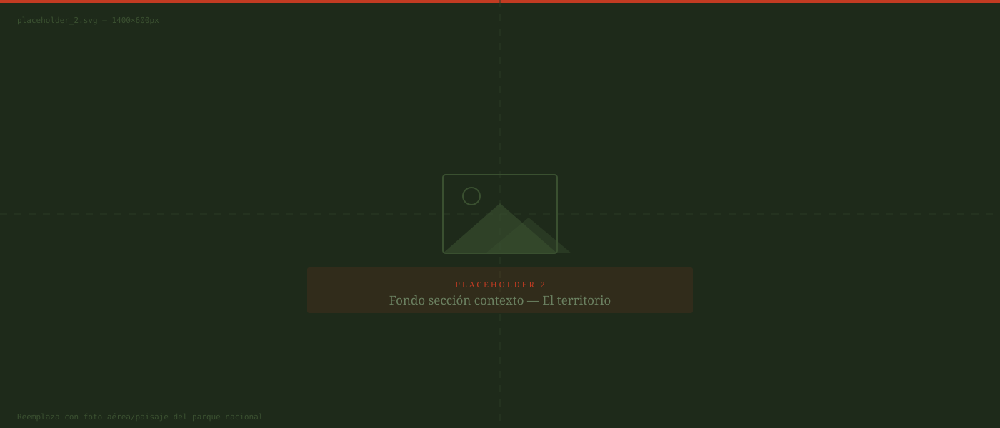

·

01 · Apertura
Contexto
01 · Apertura
La situación
Tienes el contexto y la situación
¿Cómo abordarías este caso si estuvieras en el lugar de Carlos?
02 · Desarrollo
Tu decisión
Decisión crítica
03 · Cierre
Evaluación legal
Resultado